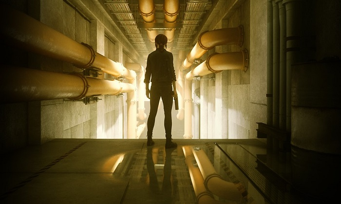
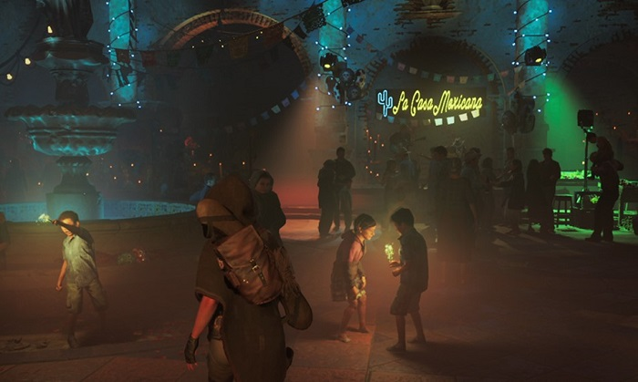

-

GeForce RTX 带来全新游戏方式，带你真情实景沉浸在《仙剑奇侠传七》的跌宕起伏与爱恨情仇。
技术应用：实时光线追踪反射
-
在电影级的“反射 (Reflections)”技术演示中，一睹 RTX 驱动的光线追踪技术。
技术应用：实时光线追踪反射、阴影、环境光遮蔽和 NVIDIA DLSS。
-

借助 GeForce RTX 畅玩"控制 (Control)"，尽情探索神秘莫测的"古屋 (Oldest House)"中暗藏的其它维度。
技术应用：实时光线追踪反射（包括半透明反射）接触阴影和漫反射全局照明技术。
-

快快使用超凡绝尘的 GeForce RTX，体验“古墓丽影：暗影 (Tomb Raider)”中劳拉·克劳馥的制胜时刻。
技术应用：实时光线追踪阴影
-
借助 RTX 的强大威力，即可尽情体验"夜之城"这座未来都市的蓬勃活力。
"赛博朋克 2077 (Cyberpunk 2077)"即将迎来实时光线追踪技术！
-
GeForce RTX™ 平台集实时光线追踪、人工智能和可编程着色技术于一身，致力打造全新的游戏体验方式。
-
使用当今性能强大的 PC 游戏平台 GeForce RTX，尽享“战地™ 5 (Battlefield™ V)”中前所未有的战争体验。
技术应用：实时光线追踪反射